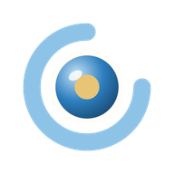

機材シート2026
⚠️
🔄
⚙️
作品一覧
機材使用状況
🔄 ガントチャートを更新
予約データがありません
＋
← 戻る
接続設定
Apps Scriptで発行した「ウェブアプリのURL」と、MOBILE_API_TOKENに設定した合言葉を入力してください。この情報はこのスマホの中だけに保存され、外部には送信されません。
ウェブアプリのURL（.../exec）
合言葉（トークン）
背景画像（お好みで設定できます）
画像を選ぶ
背景を削除
選んだ画像はこのスマホの中だけに保存されます（他の端末やApps Script側には送信されません）。
閉じる
保存して接続
接続を解除する（この端末の設定・データを削除）
← 戻る
予約を追加
作品名（機材リストに登録済みの作品名と完全一致させるため選択式）
（作品名を読み込み中...）
カテゴリで絞り込む（任意）
（読み込み中...）
機材名（一覧から選ぶか、「＋新しい機材名を入力」で自由入力）
（読み込み中...）
✎ 選んだ機材名を書きかえる
📅 使用状況を見ながら日付を選び直す
この機材の予約状況（タップで開始日→終了日を選べます）
✕ やめる
‹
›
👆 開始日をタップしてください
数量
発注先
（自社在庫・セット機材）
開始日
終了日
発注先（任意。ここで選ぶと、この後リストに追加する機材の初期値になります）
（自社在庫・セット機材）
備考
↑ここで入力した開始日・終了日・発注先・備考は、下で機材を「リストに追加」するときの初期値になります。追加したあとは機材ごとに個別に変更できます。
＋ この機材をリストに追加
キャンセル
保存する
この予約を削除する
← 戻る
閉じる
← 戻る
使用中（今日がその予約の期間内）
予約あり（これから始まる予約がある）
空き（予約なし）
機材名をタップすると、その機材までジャンプできます。
閉じる
更新中...
キャンセル
OK